项目创建¶
参考文档¶
生成目录¶
安装好Sphinx环境后，它自带了一个工具 sphinx-quickstart , 该工具可以自动生成项目目录文件
在项目目录下执行 sphinx-quickstart 命令
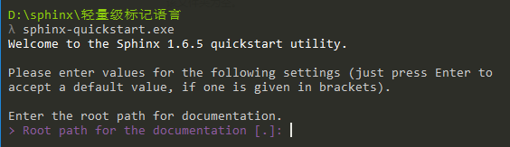
- 接下来会进入一个设置向导，根据向导一步一步设置文档项目
- 文档根目录(Root path for the documentation)，默认为当前目录(.)
- 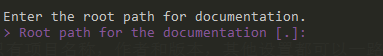
- 是否分离文档源代码与生成后的文档(Separate source and build directories): y
- 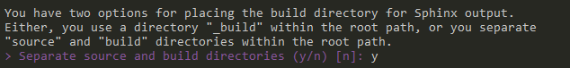
- 模板与静态文件存放目录前缀(Name prefix for templates and static dir):_
- 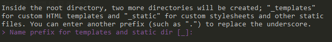
- 项目名称(Project name) : 轻量级标记语言；作者名称(Author name)：HappyAnony
- 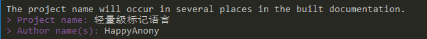
- 项目版本(Project version) : 1.0.1
- 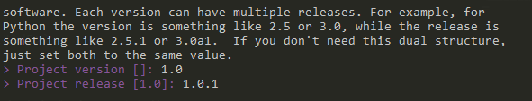
- 项目文档语言(Project language)：zh_CN【 Sphinx支持语言查看 】
- 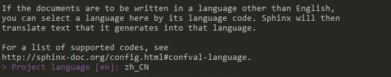
- 文档默认扩展名(Source file suffix) : .rst
- 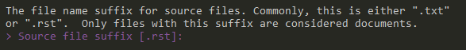
- 默认首页文件名(Name of your master document):index
- 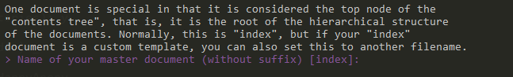
- 是否添加epub目录(Do you want to use the epub builder):y
- 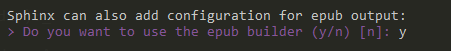
- 启用autodoc|doctest|intersphinx|todo|coverage|pngmath|ifconfig|viewcode：y
- 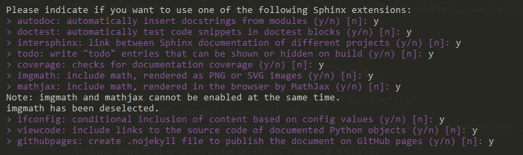
生成Makefile (Create Makefile)：y
- 生成windows用命令行(Create Windows command file):y
- 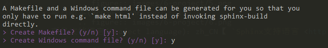
目录结构¶
sphinx-quickstart 命令执行完后，项目目录的目录结构如下所示：
readthedocs
│ make.bat=======make批处理命令
│ Makefile=======make命令执行所依赖的makefile文件
├─build==========运行make命令后，生成的文件都在这个目录里面
└─source=========放置文档的源文件
│ conf.py====存放生成文档的配置信息
│ index.rst
├─_static
└─_templates